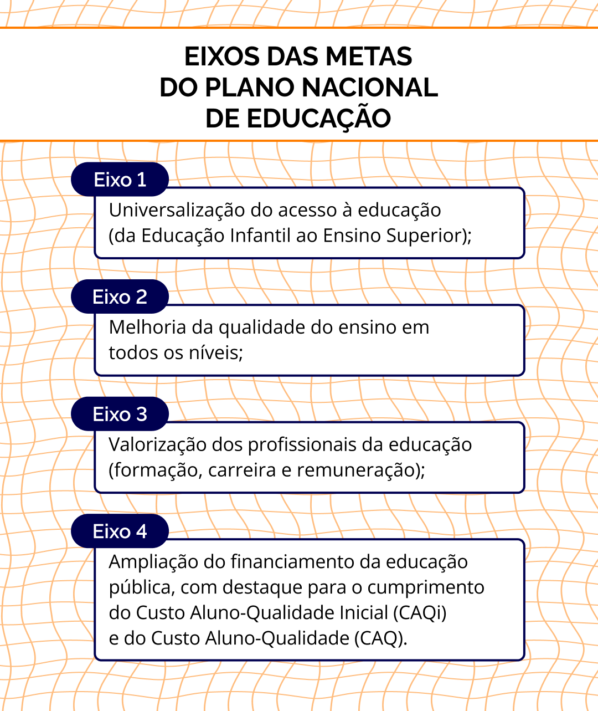

A EPT nas CNEs, no PNE e no Sistema Nacional de Educação
Como foi estudado no capítulo 2, a redemocratização do país impulsionou as demandas de ampliação da participação da sociedade na elaboração, no acompanhamento e na avaliação das políticas públicas, inscrevendo na Constituição de 1988 o direito de participar de todo o ciclo de criação dessas políticas. As escutas e consultas, por diversos meios (audiências, seminários, conferências etc.) garantiram, em certa medida, que movimentos sociais, representações de trabalhadores, empresários, gestores e usuários das políticas públicas implantadas se manifestassem. Com os eventos nacionais quase sempre precedidos por etapas municipais e estaduais, podem ser listados como principais exemplos que envolvem a área educacional e a EPT:
- 1º Seminário Nacional de Educação Profissional (2003);
- 1ª Conferência Nacional de Educação Profissional e Tecnológica (2006);
- Conferência Nacional da Educação Básica (2008);
- 1º, 2º e 3º Fórum Mundial de Educação Profissional e Tecnológica (2009, 2012, 2015);
- Conferência Nacional Popular da Educação – Conape (2018 e 2022);
- Conferência Nacional de Educação - Conae (2010, 2014, 2024).
Além disso, eventos específicos sobre EPT ocorreram em diversas edições do Fórum Mundial da Educação e do Fórum Social Mundial, todos com ampla participação de gestores, professores, estudantes e com a representação de trabalhadores.
Também deve ser ressaltado que os órgãos colegiados, a exemplo do Conselho Nacional dos Institutos Federais (Conif), do Fórum de Gestores Estaduais de Educação Profissional (vinculado ao Conselho Nacional de Secretários Estaduais de Educação – Consed), do Conselho Deliberativo do Fundo de Amparo ao Trabalhador (Codefat) e das Comissões Tripartite de emprego estaduais, passaram a participar das consultas relativas à EPT.
A gestão democrática da educação nacional, prevista na LDBEN/96, é composta por diversos órgãos, sendo eles o Fórum Nacional de Educação (FNE), a Conferência Nacional de Educação (Conae), o Plano Nacional de Educação (PNE) e o Sistema Nacional de Educação (SNE).
Ao FNE, composto por representantes dos mais diversos setores e entidades educacionais da sociedade civil e do Estado, compete convocar e coordenar a Conae e acompanhar, monitorar e avaliar o PNE. O avanço das políticas de educação para o estabelecimento do PNE 2014-2024 e seus correlatos – planos estaduais/distrital (PEEs/PDE) e planos municipais (PMEs) – para a sua implementação e avaliação pode ser atribuído ao amplo processo de participação da sociedade civil na 2ª Conferência Nacional de Educação (Conae 2014), nas etapas preparatórias nos municípios, nos estados e no Distrito Federal,
Em 2017, o então governo excluiu, de forma arbitrária, entidades populares do FNE e inviabilizou a participação ampla e democrática na Conae 2018, que aconteceu esvaziada e deslegitimada. Em resposta, foi criado o Fórum Nacional Popular de Educação (FNPE), que assumiu a organização da Conferência Nacional Popular de Educação (Conape 2018). A mesma situação se repetiu em 2022, com a realização da Conae “oficial” e a Conape “popular”. Somente em 2023, com a recomposição do FNE, foi organizada a Conae extraordinária 2024, finalmente unificada.
A Conae 2024 mobilizou dezenas de milhares de pessoas que atuam na educação de todo o país em etapas municipais, estaduais e nacionais. Além disso, foram realizadas “Conferências Livres”, que são atividades temáticas que podem ser organizadas por qualquer entidade, após consulta ao FNE. As Conae 2014 e 2024 precederam e embasaram, com suas resoluções, a elaboração dos respectivos PNEs.
O Plano Nacional de Educação (PNE) é um documento que estabelece diretrizes, metas e estratégias para a política educacional no Brasil em um período de dez anos. A partir das propostas aprovadas na Conae, uma proposta é elaborada pelo MEC e é encaminhada ao Congresso Nacional. Após discussões envolvendo governos, educadores, especialistas e a sociedade civil, a proposta final é votada e encaminhada para a sanção presidencial. A importância do PNE advém da sua legitimidade e legalidade, sendo o guia para elaboração de políticas públicas nacionais, orientando também a construção dos planos estaduais e municipais de Educação.
O PNE vigente (2014-2024) foi sancionado pela Lei nº 13.005/2014 e está em vigor desde 25 de junho de 2014. Ele contém 20 metas estruturadas em quatro eixos principais, apresentadas no infográfico abaixo:

Título: Metas do Plano Nacional de Educação (2014-2024)
Fonte: Brasil (2014b).
Elaboração: Prosa (2025r).
Embora todas as metas do PNE 2014-2024 se relacionem direta ou indiretamente com a EPT, serão detalhadas aquelas específicas ou com correlação imediata:
- Meta 7: elevar a escolaridade média da população e melhorar a qualidade da educação;
- Meta 8: aumentar a escolaridade média da população jovem para pelo menos 12 anos de estudo;
- Meta 9: elevar a taxa de alfabetização da população com 15 anos ou mais;
- Meta 10: integrar 25% das matrículas de Educação de Jovens e Adultos (EJA) ao Ensino Fundamental e Médio com a Educação Profissional;
- Meta 11: triplicar as matrículas em cursos técnicos de nível médio, com pelo menos 50% dessa expansão no setor público;
- Meta 12: elevar a taxa bruta de matrícula na Educação Superior para 50% e a taxa líquida para 33% da população de 18 a 24 anos.
As mudanças de governo, com concepções diferentes sobre o papel da educação no desenvolvimento nacional, parecem ser responsáveis, junto com a Pandemia da COVID-19, pelo não alcance da maioria das metas do PNE vigente. Por exemplo, em 2023 só foram apuradas 4,7 % das matrículas de EPT Integrada à EJA, frente aos 25% previstos na META 10. Do mesmo modo, quanto à META 11, as matrículas de EPT não triplicaram, "apenas" passaram de 1.602.946 (2013) para 2.271.607 (2023); por outro lado, a participação pública na expansão superou o previsto de 50%, chegando a 54,4%.
Além disso, os maiores pontos críticos foram o financiamento insuficiente da educação pública e a desvalorização dos profissionais da educação (salários, condições de trabalho, formação, atratividade da carreira), questões que deverão estar presentes na formulação e execução do próximo Plano Nacional.
O próximo PNE (2025-2034) está em fase de discussão e elaboração, com a proposta elaborada pelo MEC com base nas Resoluções da Conae enviado ao Congresso Nacional em 16 de junho de 2024 para debate, que certamente irá apresentar as diferentes concepções e interesses em jogo. O projeto pode ser acessado na forma do Projeto de Lei nº 2.614/2024 e sua tramitação pode ser acompanhada pelo Portal da Câmara dos Deputados. Além de questões de princípios, presentes no PNE anterior (mas nem por isso isento de polêmicas), como a universalização da Educação Básica, a redução das desigualdades educacionais, a ampliação do financiamento e a integração entre Educação e Trabalho, a proposta elenca alguns eixos, temas e metas tais como: recuperação das perdas da pandemia; tecnologia e inovação; educação inclusiva; formação e valorização dos professores; sustentabilidade e educação ambiental; expansão do Ensino Técnico e Superior.
A EPT está contemplada na proposta de PNE enviada ao Congresso Nacional em dois objetivos:

Título: Objetivos da EPT no Plano Nacional de Educação (2025-2034)
Fonte: Brasil (2024) e Schüler (2023c).
Elaboração: Prosa (2025s).
Em relação ao PNE vigente, os aspectos positivos estão relacionados ao reconhecimento da importância social da EP e do setor público, com fortalecimento das redes, inclusive as estaduais. Também são citadas questões ausentes no ciclo anterior, como orientação profissional, verticalização, as mulheres na EPT, a assistência estudantil e a especificação da oferta integrada para as populações do campo e para as comunidades indígenas e quilombolas. Em contrapartida, no mesmo documento, há a retirada da prioridade da forma integrada, abrindo espaço para as formas concomitante e subsequente e para cursos de curta duração, como nas seguintes metas:
- Garantir 25% das matrículas de educação de jovens e adultos, nos ensinos fundamental e médio, na forma articulada à educação profissional.;
- Três milhões de matrículas em cursos de qualificação profissional com carga horária mínima de cento e sessenta horas;
- Aumento de 50% da forma subsequente ao ensino médio;
- Expansão EP técnica de nível médio 50% do ensino médio, com no mínimo, 45% da expansão nas redes públicas.
(Brasil, 2024, grifo nosso).
Também é preocupante e levanta dúvidas a introdução de ações aparentemente “voltadas para a qualidade”, mas que têm origem no ideário do polo hegemônico, suscitadas em expressões como:
- “referenciais nacionais de qualidade” - elaborados por quem?
- “padrões adequados de aprendizagem” – baseados em que perspectiva?
- “incentivar a flexibilização curricular para atender públicos específicos” – uma nova dualidade educacional no interior da EPT?
- “Estimular a expansão da prática profissional” – aligeiramento da formação por incorporação do tempo de trabalho? Submissão do currículo ao saber-fazer, cindindo o par teoria-prática?
- “Alinhamento oferta e demanda” – a que demanda, da sociedade ou do mercado?
A redução do papel da expansão pública abre espaço para o financiamento das redes privadas com recursos públicos, inclusive viabilizando o criticado “5º itinerário”, objeto de desejo das redes privadas.
Para refletir: PNE e EPT
Como um exercício para agregar ao seu Memorial, responda às seguintes perguntas:
- Você conhecia as metas 10 e 11 do PNE e suas estratégias? Considera elas suficientes para o avanço da EPT no Brasil? E no seu território?
- Você conhece a proposta do novo PNE, encaminhada ao Congresso pelo Governo?
- Analise as propostas para a EPT, debata com seus colegas no sentido de perceber:
- as principais questões da EPT estão presentes;
- a contribuição das metas e estratégias para a solução de problemas que sua unidade escolar vivencia e se é suficiente;
- a necessidade de acréscimos, modificações ou supressões que poderiam ser encaminhadas ao Congresso Nacional.
***
A seguir, disponibilizamos uma série de vídeos curtos sobre cada um dos eixos que estruturam a proposta do novo PNE (2024 - 2034). Sugerimos que você leia os títulos e explore aqueles que lhe são mais interessantes ou que dialogam mais com a sua realidade:
- EIXO I - O PNE como articulador do Sistema Nacional de Educação;
- EIXO II - A garantia do direito de todas as pessoas à educação de qualidade;
- EIXO III - Educação, Direitos Humanos, Inclusão e Diversidade;
- EIXO IV - Gestão democrática e educação de qualidade;
- EIXO V - Valorização de profissionais da educação;
- EIXO VI - Financiamento público da educação pública;
- EIXO VII - Educação comprometida com a justiça social, a proteção da biodiversidade, o desenvolvimento socioambiental sustentável e o enfrentamento das desigualdades e da pobreza.
Também se esperam dificuldades na tramitação do documento devido ao cenário político atual extremamente polarizado. Ainda, outras duas preocupações se fazem presentes quanto à garantia de recursos públicos suficientes para implementar as metas em um contexto de ajuste fiscal e ao efetivo monitoramento e avaliação das metas.
A implantação do Sistema Nacional de Educação (SNE) tem sido tortuosa e complexa. Desde a Constituição de 1988, está prevista a organização dos sistemas de ensino em regime de colaboração entre União, estados, Distrito Federal e municípios, mas isso nunca foi regulamentado claramente. O SNE é fundamental para o pleno desenvolvimento da Educação em geral e para a EPT, em especial quanto às possibilidades de se constituírem processos de verticalização no âmbito do território educativo das unidades das diversas dependências administrativas.
Apesar do aparente consenso, a criação do SNE está em tramitação no Congresso Nacional há anos, devido à dificuldade de construção de consensos entre as diferentes concepções dos agentes sociais. Os debates se dão sobre qual a melhor maneira de estabelecer mecanismos legais para essa colaboração acontecer de forma efetiva, sendo as principais questões:
- A regulamentação do regime de colaboração, com definição precisa dos papéis, responsabilidades, financiamento, entre outros;
- A descentralização e autonomia dos entes federados sem tirar a prerrogativa da União de estabelecer diretrizes nacionais (coordenação interfederativa);
- O papel do SNE na viabilização, no monitoramento e na avaliação permanente do PNE conforme discutido na Conae/2024;
- A estruturação do sistema, com possibilidade da criação de subsistemas específicos para avaliação, financiamento e gestão;
- Os processos de integração da Educação Básica e Superior, EPT e Educação propedêutica, incluindo a pós-graduação e a Educação a Distância (EaD);
- A definição de órgãos e mecanismos de controle social e participação nos processos de decisão do SNE, para garantir a gestão democrática e o envolvimento da sociedade.
Os argumentos a favor da regulamentação do SNE acentuam seu papel na (1) articulação e colaboração mais efetiva entre os diferentes níveis de governo (União, estados, municípios e Distrito Federal), facilitando a troca de experiências; (2) na redução de desigualdades, com maior uniformidade nas políticas educacionais, garantindo que todos os estudantes tenham acesso a uma educação de qualidade, independentemente de sua localização geográfica; (3) na solução de conflitos e sobreposições de responsabilidades entre os entes federativos; (4) na implementação de avaliações e monitoramento da qualidade educacional, permitindo a identificação de boas práticas e a correção de falhas nos sistemas de ensino. Quanto à participação social, o SNE consolida os conselhos e fóruns nas diversas instâncias que garantem a participação da sociedade civil nas decisões sobre políticas educacionais, promovendo uma gestão democrática e inclusiva.
Já os argumentos contra a regulamentação do SNE apontam para (1) a possibilidade de centralização excessiva das decisões educacionais, limitando a autonomia de estados e municípios para adaptar as políticas às suas realidades locais; (2) a burocratização; (3) o conflito de interesses entre os diferentes entes federativos, especialmente quando se trata de alocação de recursos e responsabilidades e, por último, para a (4) falta de garantia de financiamento adequado à implantação e efetividade do sistema.
Nesse sentido, são exatamente essas questões que constituem a realidade educacional brasileira na atualidade e que a proposta do SNE pretende resolver. A questão de fundo não se limita à resistência à mudança de setores que já estão acostumados com o sistema atual, dificultando a adoção de novas diretrizes e práticas, mas se situa no âmbito da negação de processos regulatórios da sociedade sobre as políticas sociais, em particular sobre a educação privada. Entretanto, a questão central da construção de um SNE é atender às diversas realidades e necessidades do Brasil, buscando um equilíbrio entre a centralização e a autonomia dos entes federativos de modo a garantir a toda a população o direito à educação, incluindo a EPT.